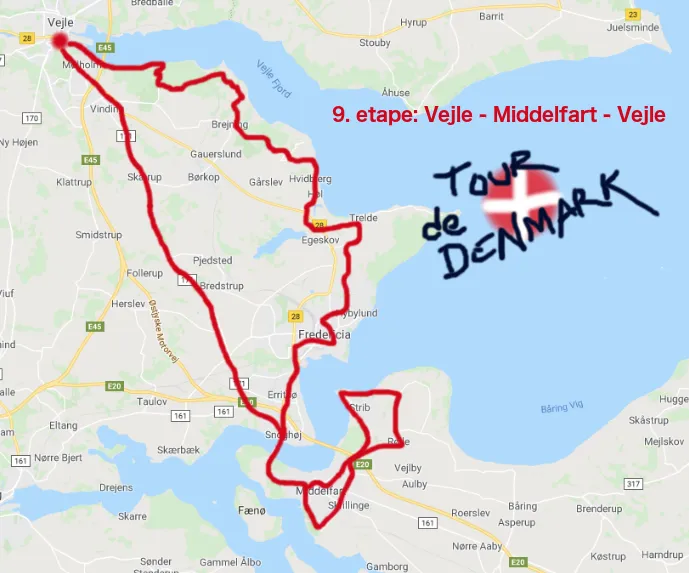

9. etape: Vejle – Middelfart – Vejle

Efter gårsdagens etape; apokalypse i Søhøjlandet, var der nærmest gravstemning feltet. Farten var lav fra starten og ingen ville tage kampen op mod Moltenis overmagt. Kun Peugeot Re-Cycled´s Morten Mejsen pippede op om snyd, protest, tæsk og at han ville tage hævn en af dagene…
Squadra Moltenis Kaptajn Bjørnsteen udnyttede stilstanden – og i Fredericia rullede han kanonen frem – og kørte solo de sidste 50 km.

Efter det voldsomme vejr på gårsdagens etape i Søhøjlandet, viste vejret sig i dag fra den nogen blidere side. Regn og de blygrå skyer var afløst af sol og letskyet. Med Bølgen og broen i baggrunden, smilede Lido de Vejle til rytterne – men kun for en kort stund. Allerede efter 8 km stod morgenmenuen på Col de Munkebjerg, efterfulgt af pavé Andkær Vig og Col de Brejning.

Ynk, klynk og aggressivt humør
Humøret var højt på Squadra Molteni holdet, der havde taget plads bagerest i feltet. I resten af feltet var der en ynk og klynk uden lige. Nogle ville hellere hjem og pudse i forvejen højpolerede cykelkomponenter, mens andre bare syntes det hele var snyd og hellere ville køre i rundkreds på Amager Fælled.
Morten Mejsen fra Peugeot Re-Cycled var dog som sædvanlig i aggressivt humør. Han skældte ud på alt og alle. Selv en tilfældig og sagesløs kvindelig svensk turist, der var ude og lufte sin puddelhund ved Hvidbjergs sommerhusområde, fik en bredside af franske eder og ukvemsord:
Merde, Putain, Connasse, Cul, Batard, Fils de pute…
Der er ingen tvivl om, at Morten Mejsen fra Peugeot Re-Cycled er ved at bygge op til noget stort. Men det blev kun ved snakken i dag. For kort før Fredericia, var Morten Mejsen løbet tør for verbalt krudt.
Til gengæld rullede Kaptajn Bjørnsteen det tunge skyts frem – og som feltet kørte ind gennem Fredericias gamle byporte, stak Kaptajnen af.
I et hård dræbende tempo blev Den Gamle Lillebæltsbro samt en lille sløjfe på Fyn forceret – inden de sidste 25 km på “Dødens Landevej” skulle overleves.
Dødens Landevej
Den gamle landevej (171) fra Snoghøj til Vejle kaldes også “Dødens Landevej”. Det gør den af flere grunde. Den historiske er, at landevejen engang var 3-sporet landevej. Det var en landevejstype i 1930’erne og især 1950’erne, hvor de 3-sporede veje havde en midterbanen som fælles overhalingsbane! Det gav i sagens natur en del frontal-sammenstød.
En anden grund til navnet “Dødens Landevej” er, at landevejen stort set er helt lige og går mod nordvest. Det vil sige, at der næsten altid er modvind de 25 km Snoghøj til Vejle.
Der var også modvind i dag. Men Kaptajn Bjørnsteen krøb ned i bukningerne, og lagde sig i en aerodynamik kørestil, som er tillært efter utallige timer i vindtunnel på Institut für Aerodynamik i Rostock. Han skar han sig gennem vinden, og kunne køre i mål i Vejle, som sikker vinder af dagens etape.
Forza Kaptajn Bjørnsteen
Forza Molteni
9. Vejle – Middelfart – Vejle
1. Niels Bjørnsteen, Squadra Molteni
Klassement:
1.Niels Bjørnsteen, Squadra Molteni
2. Grane Wunderbein Maaløe, Squadra Molteni
3. Jens Stærk Bojesen, Squadra Molteni
4. Lars Munch Larsen, Squadra Molteni
5. Per Sandahl, Squadra Molteni
6. Jens Langergaard, Squadra Molteni
7. Kristian Blume, Squadra Molteni
8. Svend Seegert, Squadra Molteni
Hold:
1. Squadra Molteni